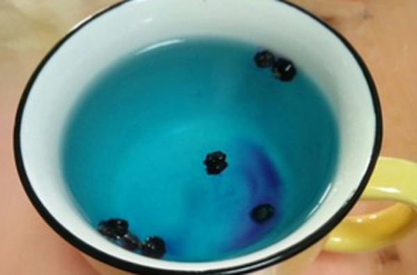
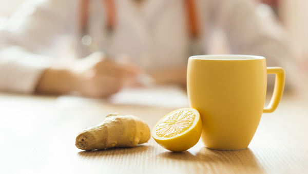

原文连接:https://www.daquan.com/post/13168.html
黑枸杞是滋补的好药材，但是黑枸杞并不能长期饮用，黑枸杞也是有泡水喝的正确使用方法的。使用黑枸杞泡水喝时，方法正确黑枸杞会更有营养也更加养身。正确的泡水的方法是用黑枸杞放入进冰水中，然后用冰水将黑枸杞浸泡，当然不到60度的温开水也是可以泡黑枸杞的。
黑枸杞怎么泡水喝正确
1、用凉水

黑枸杞用凉水泡是最好的，因为凉水是不会泡坏黑枸杞的营养成分，所以黑枸杞用凉水泡是最好的。黑枸杞用凉水泡时，要注意凉水并不是直接用水龙头的纯净水，而是要用矿泉水或者烧开晾凉后的水。喝凉水其实对日常养身是有帮助的，凉水能够加强肠胃功能。
2、 黑枸杞的量要适量

黑枸杞在泡水的时候要注意使用适当的量，黑枸杞的量不能太多，量太多是会引起腹泻和上火出现口腔溃疡的。黑枸杞的量也不能太少，量太少没有作用。黑枸杞的量正确的用量是每500ml的水中加入5-8颗黑枸杞，一天饮用黑枸杞的量不能超过10颗。
3、 泡水的水温

黑枸杞泡水的温度也是很重要的，黑枸杞泡水时要注意黑枸杞是不能使用热开水来泡的。因为温度过高的开水是会破坏黑枸杞的药性，一般使用60度左右的开水是比较好的，如果肠胃比较好的用凉开水来泡喝药效最好。
黑枸杞泡水的作用
1、 女性养颜
女性养颜是可以使用黑枸杞来泡水喝，这是因为黑枸杞有着美白的作用，因为黑枸杞中含有大量的饿维生素，所以黑枸杞是有着很好的美白的作用的。黑枸杞不仅能够美白还能够淡化脸斑和淡化疤痕，所以女性可以使用黑枸杞来养颜。
2、 男性补肾
黑枸杞有着很好的补肾的功效，黑枸杞是黑色的食物所有可以入肾精起到补肾的作用，枸杞也能够滋补肝肾所以黑枸杞是能够补肾的。
3、 老年人滋补
黑枸杞是有着让老年人滋补的功效，黑枸杞是可以补肾养身的，并且能够增强抵抗力所以老年人用黑枸杞有着很好的滋补的功效。黑枸杞的运用主要是泡茶饮用，补肾的朋友也可以用黑枸杞泡药酒饮用。
结语：通过上文的介绍，相信大家都了解了关于黑枸杞怎么泡水喝正确，喝黑枸杞要注意水温的剂量都要适中才能发挥全部药性。